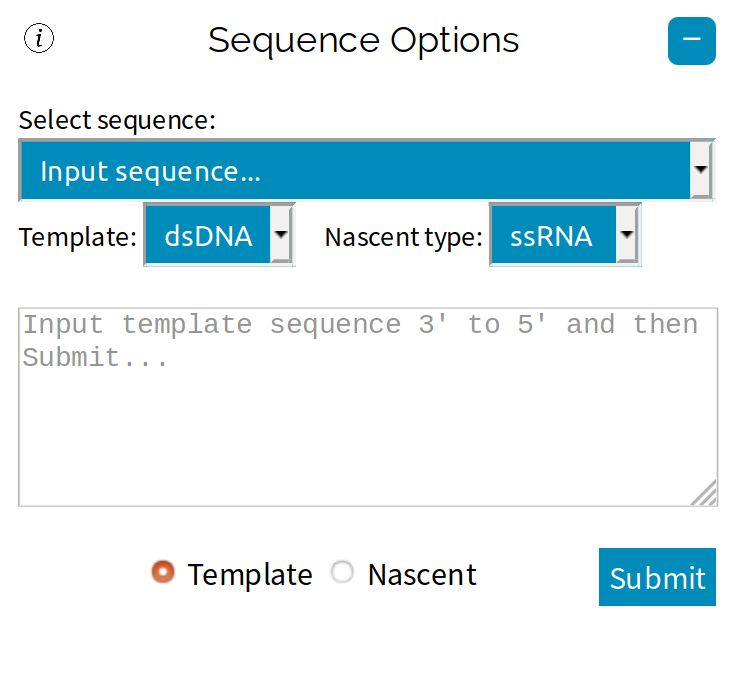
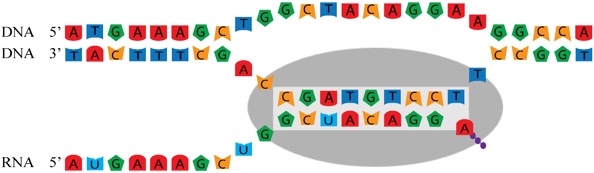
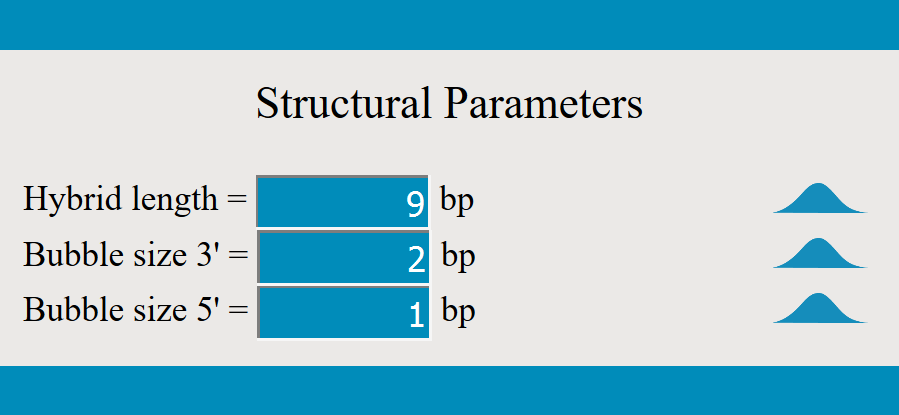
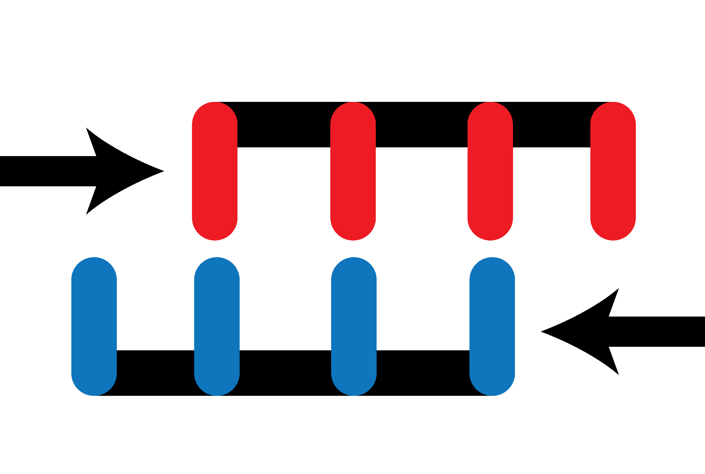

| Home About Download Contact us |
An interactive graphical simulation of nucleic acid polymerases
Disclaimer: SimPol is currently in prerelease. It has not been peer-reviewed or published.
SimPol is a free open-source web-based program aimed to help researchers, teachers and students visualise transcription at the level of a single molecule. Transcription is the copying of a template (typically DNA) into messenger RNA (mRNA) and is one of the most central processes in all of biology. The copying process is carried out by a protein called RNA polymerase. RNA polymerase runs along the template as it extends the mRNA. While this main pathway of transcription is fairly straightfoward, some of the less-common and off-pathway events can be cause complications. For example, sometimes RNA polymerase moves very far in the wrong direction (backtracking), sometimes a nucleotide is copied incorrectly (a misincorporation), and sometimes the template and mRNA slip along each other (which can cause an insertion or deletion). Researchers have built kinetic models of transcription to describe and quantify the main pathway and some of these off-pathway processes.
This program has two main functions: (1) Visualisation of transcription elongation, misincorporations and transcriptional slippage, and for more advanced users (2) Simulation of transcription elongation with kinetic models. This webpage contains tutorials on how to use SimPol.
− Getting Started
Sequence selection

The first thing you may want to do is choose your nucleic acid sequence. Open up the ☰ Parameters side-navigation menu, where you can enter your own sequence or use one of the example sequences. SimPol is designed primarily for transcription with DNA-dependent RNA-polymerases. Your choice of template-type (DNA or RNA) and nascent-type (DNA or RNA) will dictate which thermodynamic parameters are used - Turner's RNA/RNA parameters, Sugimoto's DNA/RNA parameters, or SantaLucia's DNA/DNA parameters.
Polymerase structure
Polymerases read the template strand (eg. the genome) in the 3′ → 5′ direction, and copy it to create the nascent strand (eg. mRNA) which grows in the 5′ → 3′ direction. You can control the polymerase using the Navigation panel (described in the section below). RNA polymerases typically contain four channels: a template entry channel, a template exit channel, a nascent strand exit channel and an NTP entry pore. Within the RNA polymerase, the template and nascent strand basepair to form a hybrid. If the template is double-stranded then RNA polymerase needs to melt the template in order to access the strand which is being copied. This set of bases which are melted comprises the transcription bubble. In the example below, the transcription bubble contains 2 + 9 + 1 = 12bp.
 
The number of template bases within the transcription bubble differs between polymerases. These three parameters may have an effect on the activity of the polymerase and can be changed from the ☰ Parameters side-navigation menu.
You can control the polymerase directly using the Navigation panel at the top of the main page. You should play around with the different reactions to see how they work. You may wish to Simulate reactions, whereby the reactions described below are selected randomly based off experimental parameters.
Translocation. There are two translocation reactions: Backwards and Forwards. These operations move the polymerase one base-pair left and right respectively, with respect to the template and nascent strand. These operations involve reconfiguring the base-pairs within the hybrid, and within the chromosome if it is double-stranded. If the polymerase moves beyond the 3′ end of the nascent strand, then the nascent strand will be released (termination).
Catalysis. If the active site is free and next to the 3′ end of the nascent strand, then the polymerase may bind NTP. Once bound, the polymerase may catalyse the reaction, or it may release the NTP back into the cell. Reverse-catalysis is also possible in SimPol using the Decay reaction, although it is very improbable in nature. The canonical pathway of transcription elongation is a three step cycle: 1) forward translocation, 2) NTP binding, 3) catalysis. This may also be achieved with the Copy function.
Deactivation. RNA polymerases are believed to occassionally deactivate whereby they undergo conformational changes and enter a catalytically inactive state, sometimes known as the intermediate state. In this state the protein cannot polymerise but it may still translocate. Factors known to increase the rate of entering the inactive state are 1) weak basepairing in the hybrid, 2) interactions between the polymerase and upstream or downstream elements of the template, and 3) interactions between the polymerase and a secondary structure in the nascent strand . Inactivation causes the polymerase to pause indefinitely, and elongation can only resume following an activation event.
Slippage. Sometimes the nascent and template strand temporarily melt and a bulge forms in one of the strands. This can be performed by the Form Bulge reaction. When this happens, a bulge (kink) forms within the duplex. This can occur within either the template or nascent strand (although in SimPol it can currently only occur within the nascent strand). When a bulge forms, the active site may be opened up, allowing one of the template bases to be copied twice. This would lead to an insertion. The bulge may diffuse left or right along the hybrid. This process is favoured if the hybrid sequence is repetitive (eg. AAAAAAAAA/UUUUUUUUU). When positioned at either end of the hybrid, the bulge may be absorbed. This three step process (bulge formation, diffusion and absorption) was inspired by Neher et al. and is believed to be the mechanism behind transcriptional slippage. Iterative slippage and elongation can lead to large insertions. This is sometimes called stuttering and can also be achieved with the Stutter  function.
The toolbar
 |
|
 |
|
The toolbar contains some essential functions which you should familiarise yourself with.
Reinitiate will reset the polymerase to its initial position. This will not affect plots or any other outputs. If you have added a background distribution behind any parameters then they will be resampled.
Stop will immediately halt any polymerase acitivies taking place. This will not affect any parameters, plots or other outputs.
N = is a variable. The meaning of N depends on which tool is being used.
Simulate begins the random simulation starting from the current position of the polymerase. During the simulation, reactions are randomly sampled according to their rate constants, which can be tweaked in the parameters menu. N trials are performed in the simulation. When the polymerase finishes copying the sequence (or prematurely terminates) the next trial begins. The duration of each reaction in the simulation is determined by Speed. The simulation can be stopped early using the Stop button.
Clear cache opens up a dialog where you can delete any kinetic or sequence data which has been saved during the simulation. The kinetic data is displayed in plots so think of this button as resetting the plots.
Copy transcribes/replicates/copies the next N bases. The duration of this process is determined by Speed. Copying can be stopped early using the Stop button.
Stutter copies the current base N times, therefore adding an insertion of size N into the nascent strand. Insertions are added through slippage. The duration of this process is determined by Speed. Stuttering can be stopped early using the Stop button.
Fold folds the mRNA into its predicted secondary structure and renders it onto the nascent strand. This function will only work
if the nascent strand is single-stranded RNA. Note that this function is only cosmetic and will not affect the polymerase. If you want the mRNA secondary structure to affect reactions
then make sure that "Enable mRNA folding" is enabled. This function is disabled on mobile devices.
Speed is a variable which controls the speed of the animation while Copying, Stuttering or Simulating. If the speed is set to slow, medium or fast, then the polymerase will animate each reaction at a slow, medium or fast speed, respectively. If the speed is ultrafast, then the animation will not show every reaction and will only update periodically. If the speed is hidden, then this is the same as ultrafast except that the polymerase is no longer displayed and will not animate at all. Hidden is the fastest setting.
Save downloads the current session in XML format. If the page is refreshed or if your web browser crashes you will
lose your current settings. If you do not want to lose your settings then you should save.
Load uploads a saved XML session file from your local storage.
Reinitiate will reset the polymerase to its initial position. This will not affect plots or any other outputs. If you have added a background distribution behind any parameters then they will be resampled.
Stop will immediately halt any polymerase acitivies taking place. This will not affect any parameters, plots or other outputs.
N = is a variable. The meaning of N depends on which tool is being used.
Simulate begins the random simulation starting from the current position of the polymerase. During the simulation, reactions are randomly sampled according to their rate constants, which can be tweaked in the parameters menu. N trials are performed in the simulation. When the polymerase finishes copying the sequence (or prematurely terminates) the next trial begins. The duration of each reaction in the simulation is determined by Speed. The simulation can be stopped early using the Stop button.
Clear cache opens up a dialog where you can delete any kinetic or sequence data which has been saved during the simulation. The kinetic data is displayed in plots so think of this button as resetting the plots.
Copy transcribes/replicates/copies the next N bases. The duration of this process is determined by Speed. Copying can be stopped early using the Stop button.
Stutter copies the current base N times, therefore adding an insertion of size N into the nascent strand. Insertions are added through slippage. The duration of this process is determined by Speed. Stuttering can be stopped early using the Stop button.
Fold
folds the mRNA into its predicted secondary structure and renders it onto the nascent strand. This function will only work
if the nascent strand is single-stranded RNA. Note that this function is only cosmetic and will not affect the polymerase. If you want the mRNA secondary structure to affect reactions
then make sure that "Enable mRNA folding" is enabled. This function is disabled on mobile devices. Speed is a variable which controls the speed of the animation while Copying, Stuttering or Simulating. If the speed is set to slow, medium or fast, then the polymerase will animate each reaction at a slow, medium or fast speed, respectively. If the speed is ultrafast, then the animation will not show every reaction and will only update periodically. If the speed is hidden, then this is the same as ultrafast except that the polymerase is no longer displayed and will not animate at all. Hidden is the fastest setting.
Save
downloads the current session in XML format. If the page is refreshed or if your web browser crashes you will
lose your current settings. If you do not want to lose your settings then you should save. Load
uploads a saved XML session file from your local storage.
+ Plots
 button. The raw data (.tsv) or a high resolution image (.png) can be downloaded . The different
plots available are detailed below.
button. The raw data (.tsv) or a high resolution image (.png) can be downloaded . The different
plots available are detailed below.
+ Parameters
+ Kinetics and Thermodynamics
 If there are multiple chemical reactions competing with each other, then the reaction with the shortest reaction time will be selected. For example, suppose that you have a test-tube containing
a single molecule of compound $A$, which can spontaneously undergo two reactions: $A \rightarrow B$ or $A \rightarrow C$, with rate constants 0.001s-1 and 0.002s-1 respectively.
The test-tube will flash a different colour of light for each reaction.
If there are multiple chemical reactions competing with each other, then the reaction with the shortest reaction time will be selected. For example, suppose that you have a test-tube containing
a single molecule of compound $A$, which can spontaneously undergo two reactions: $A \rightarrow B$ or $A \rightarrow C$, with rate constants 0.001s-1 and 0.002s-1 respectively.
The test-tube will flash a different colour of light for each reaction. 
+
Approximate Bayesian Computation
+
Improving Software Performance
+
Kinetic Data